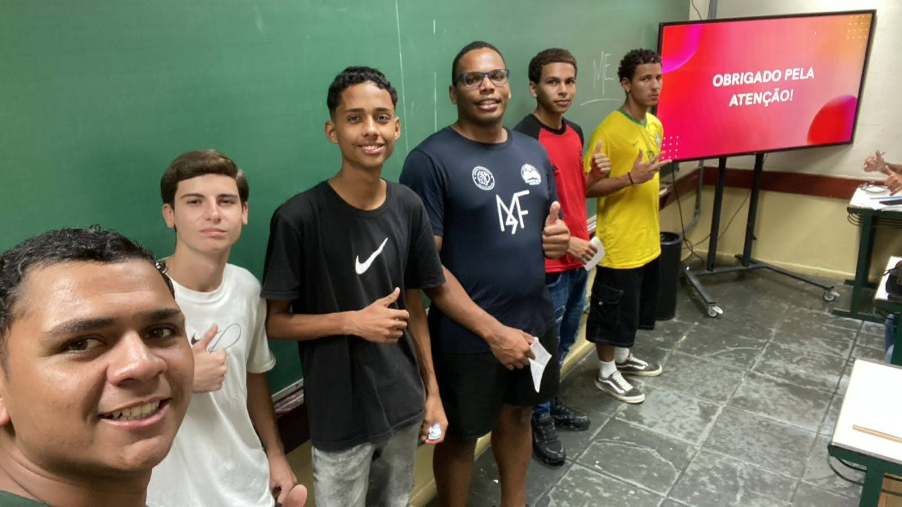

Uma experiência diferente
Uma viagem aos anos 80 e 90.
Uma proposta que combina pizza, entretenimento e nostalgia em um ambiente temático em Mongaguá.
Explore o conceito ↘Confira nossa galeria de imagens conceituais
Nosso cardápio
A Futuro's Pizza é uma proposta de pizzaria temática em Mongaguá que busca oferecer uma experiência presencial diferenciada, inspirada na estética e na cultura dos anos 80 e 90.
O conceito une um ambiente marcante, momentos de convivência e uma experiência gastronômica pensada para jovens, adultos, famílias e visitantes.

Uma nova proposta de experiência para o setor de pizzarias. Projeto desenvolvido como parte do TCC do grupo Futurama.
Somos um grupo de jovens estudantes do curso de Administração da Etec Adolph Berezin, composto por 6 membros, sendo eles: Cauã rodrigo, Felipe souza, hentony robert, Isaque altino, Matheus irmão e Waldir eduardo.
Nem sempre nossa ideia foi criar uma pizzaria. inicialmente, Nosso TCC tinha como objetivo estudar o avanço da tecnologia na educação e os problemas que as escolas publicas vinham enfrentando. Somente após varias discussões e conflitos de ideias que decidimos mudar o tcc para um projeto que visava abrir um modelo de negócios.
Durante o segundo modulo do curso, uma ideia foi levantada com base em um problema diariamente comentado por boa parte dos moradores de Mongaguá. O problema era a falta de opções de entretenimento e inovação na região. A partir dai, começamos a desenvolver nossa atual proposta.
Hoje, nosso objetivo é proporcionar aos clientes uma experiência completa, que vai além da simples consumação de pizza. Queremos criar um ambiente acolhedor e inovador, onde os clientes possam desfrutar de uma refeição deliciosa em um ambiente único.
